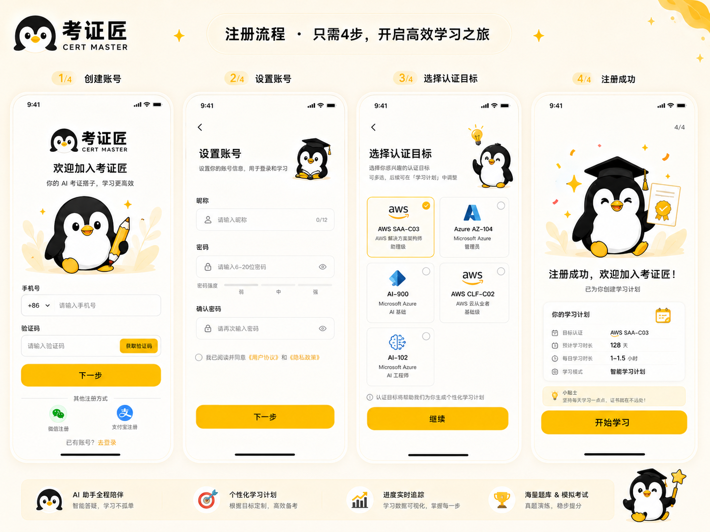
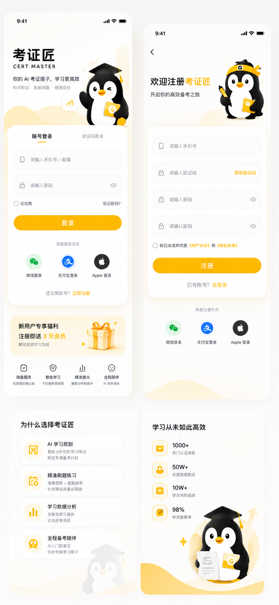
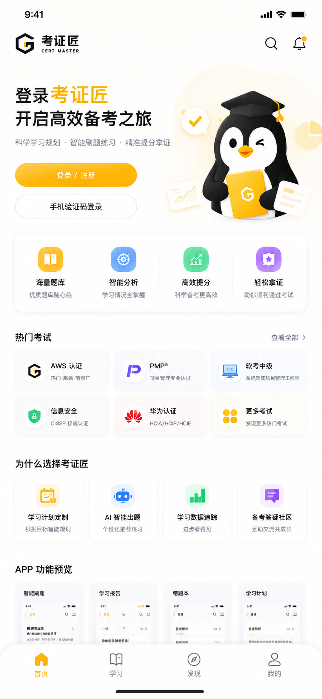
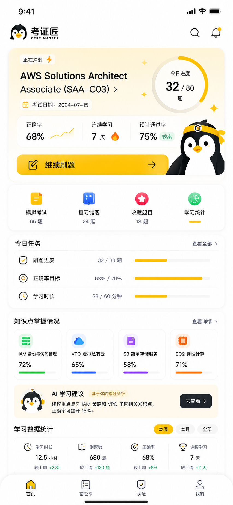
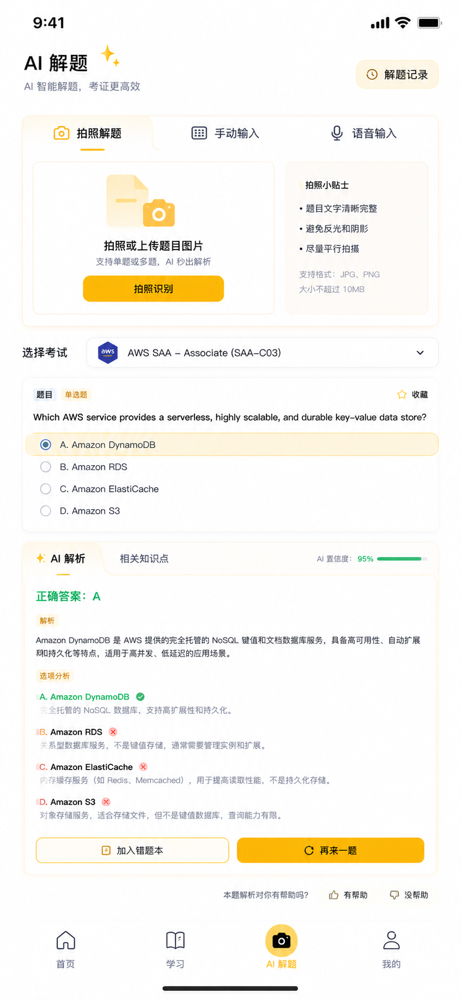
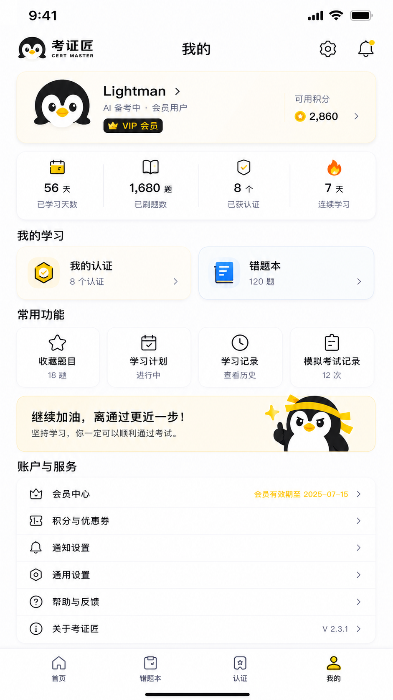
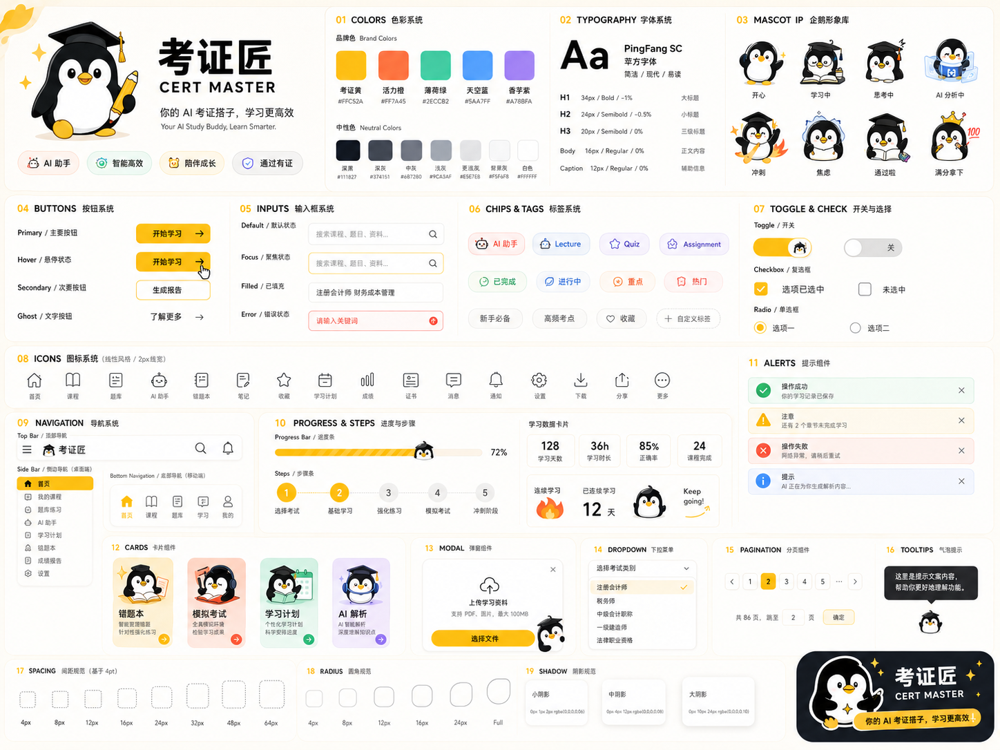

CERT MASTER · APP DESIGN REFERENCES
4 步引导式注册：创建账号 → 设置账号 → 选择认证目标 → 注册成功。每步顶部都有进度指示 (1/4, 2/4...)。 底部固定 4 个功能 pill（AI 助手 / 学习计划 / 进度追踪 / 题库模考）做产品价值锚定。
app-design-refs/06-register-flow.png

账号登录 + 验证码 双 tab · 三方登录（微信 / 支付宝 / Apple）· 新用户 3 天会员福利卡（强转化）· 下方 4 个 stats 显示平台价值（题库 / 智能 / 提分 / 陪伴）·「学习从未如此高效」转化页 1000+ / 50W+ / 10W+ / 98%。
app-design-refs/04-login-register.png

登录 CTA + 4 大入口（海量题库 / 智能分析 / 高效提分 / 轻松拿证）· 热门考试（AWS / PMP / 软考 / 信息安全 / 华为）· 「为什么选择考证匠」4 张方案卡 · APP 功能预览 4 张缩略图 · 底部 Tab Bar（首页 / 学习 / 发现 / 我的）。
app-design-refs/03-home-page.png

顶部 hero（牛小匠 + slogan「找准目标认证，开启高效备考」）· 筛选 tab（全部 / 云计算 / 安全 / 开发 / 运维 / 数据 / 人工智能）· 认证卡片：badge + 标题 + 3 tag + 难度 5 点 + 学习人数（带 🔥）。
app-design-refs/01-cert-list.png
顶部任务卡：「正在冲刺」badge + 考试名 + 日期 + 今日进度环形图（32/80）。 三 stats：正确率 68% + 连续 7 天 🔥 + 预计通过率 75%。继续刷题大 CTA。 4 入口（模拟考试 / 复习错题 / 收藏 / 学习统计）+ 今日任务 + 知识点掌握情况（4 知识点 + 进度条）+ AI 学习建议（牛小匠 + 「重点复习 IAM 策略...」）+ 本周/月/全部 数据统计。
app-design-refs/05-exam-detail.png

顶部「AI 解题 ✨」+ 副标「AI 智能解题，考证更高效」+ 右上「解题记录」入口 · 3 个 tab：拍照解题 / 手动输入 / 语音输入，拍照含「拍照小贴士」（题目清晰 / 避免反光 / 平行拍摄 / 支持 JPG PNG / 10MB）· 选择考试 dropdown（AWS SAA-C03）· 题目卡片（单选题）+ 4 选项 · 「AI 解析」+「相关知识点」 双 tab，AI 置信度 95% 进度条 · 正确答案 + 解析 + 选项分析（A ✓ 绿、B/C/D × 红）+ 「加入错题本 / 再来一题」+ 「有帮助 / 没帮助」反馈 · 底部 Tab Bar（首页 / 学习 / AI 解题（active）/ 我的）。
app-design-refs/08-ai-solve.png

用户卡：avatar + 昵称 Lightman + AI 备考中 · 会员用户 + VIP 会员 badge + 可用积分 2,860 ⭐。 4 stats（学习 56 天 / 刷题 1,680 / 认证 8 个 / 连续 7 天 🔥）。 我的学习 2 卡（我的认证 / 错题本）· 常用功能 4 入口 · 鼓励 banner（焦虑牛小匠：「继续加油，离通过更近一步！」）· 账户与服务 5 项（会员中心 / 积分 / 通知 / 通用 / 帮助 / 关于）。
app-design-refs/07-profile.png

原始设计稿全图：colors / typography / mascot / buttons / inputs / chips / icons / nav / progress / alerts / cards / modal / dropdown / pagination / tooltips / spacing / radius / shadow / sticker。 本设计系统（index.html）就是基于这张图开发出来的。开发优先看主手册的对应 section，这张图作为最终视觉锚点。
app-design-refs/02-design-system-overview.png

Cert Master · App Design Refs · 2026-05-13 · 7 张设计稿，返回设计系统